HP-FC – Ostereiersuche 2016
Hufflepuff
Ein ganz besonderes Osterfest
Es war Ostersonntag. Wie an jedem Ostersonntag vorher, sollte es für die Schüler und Lehrer in Hogwarts ein großes Fest geben. Und zu einem großen Fest gehörte natürlich auch ein großes Festessen.
Die Hauselfen von Hogwarts sorgten dafür, dass Hogwarts‘ Bewohner an diesem Tag auch gut versorgt waren. Natürlich versorgten sie die Schüler und Lehrer jeden Tag gut, aber zu Ostern hatten sie besonders viel zu tun. Die Vorbereitungen waren in vollem Gange. Die kleinen Elfen wuselten durch die Küche, suchten Zutaten zusammen, schnippelten Obst und Gemüse oder kochten Kartoffeln. Die Küche war schon jetzt erfüllt von einem wunderbaren Duft.
Während die kleine Elfe Winky einen fertigen Kürbiskuchen aus dem Ofen holte, ertönte plötzlich ein hohes Quietschen in der Küche. Winky stellte schnell den Kuchen sicher auf dem Tisch ab, streifte sich die Ofenhandschuhe ab und eilte zur Quelle des Quietschens. Die anderen Elfen legten ebenfalls ihre Arbeit nieder und liefen Winky hinterher. Sie alle sahen sehr verdutzt aus. Schließlich erkannten sie, wer den Ton verursacht hatte. Lila, eine andere Hauselfe, die gerade Fleisch aus der Speisekammer hatte holen wollen, stand da und hielt einen kleinen, in buntes Papier gewickelten Gegenstand in der Hand.
„Was ist das?“, fragte Winky verwundert. „Das lag auf dem Boden der Speisekammer, hinter einem Regal. Ich wäre beinahe draufgetreten“, erklärte Lila. „Aber was ist das?“, widerholte ein anderer Elf Winkys Frage. „Das ist ein Schokofrosch“, mischte sich nun auch Dobby ein. „Aber warum liegt ein Schokofrosch auf dem Boden der Speisekammer?“, fragte Lila. „Vielleicht hat ihn ein Schüler dort hingeworfen“, vermutete Winky. „Aber in letzter Zeit war kein Schüler hier unten“, gab ein anderer Elf zu bedenken. „Das ist eine kleine Aufmerksamkeit von Professor Dumbledore“, klärte Dobby die anderen auf.
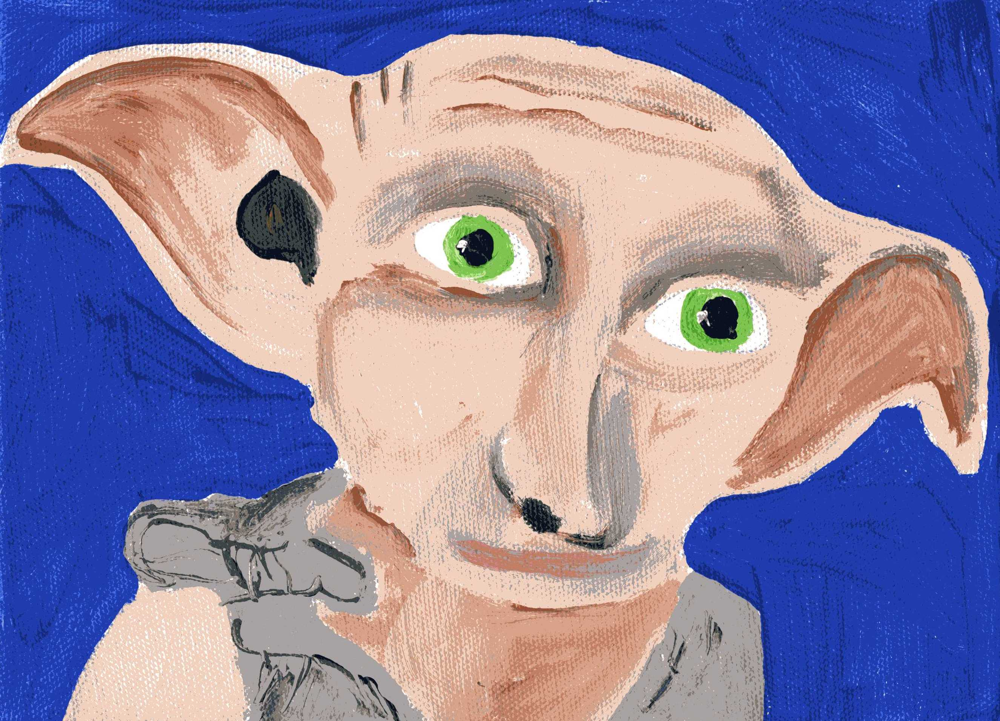
„Aufmerksamkeit?“ Ein Raunen ging durch die Reihen der Hauselfen. Sie waren es nicht gewohnt, dass ihnen jemand eine Aufmerksamkeit zuteilwerden ließ. „Ihr wisst ja, dass heute Ostern ist. Deshalb hat Professor Dumbledore ein paar Süßigkeiten für uns versteckt, um uns für unsere Arbeit zu danken“, erklärte Dobby. Die anderen Hauselfen waren sehr skeptisch. Professor Dumbledore war immer sehr nett zu ihnen, doch so richtig wussten sie nicht damit umzugehen. Dobby hingegen war begeistert. Und wenn die anderen Hauselfen ehrlich waren, mussten sie zugeben, dass sie es insgeheim auch schön fanden, dass jemand an sie dachte.
„Hier ist noch etwas“, rief nun ein etwas älterer Elf und zog ein Schokoladen-Ei hinter einer Rührschüssel hervor. Ehrfürchtig betrachtete er die Süßigkeit. „Wir sollten wieder an die Arbeit gehen“, gab Winky zu bedenken, die als einzige noch an dieser ganzen Aktion zweifelte. „Sonst wird das Essen nicht rechtzeitig fertig.“ Die anderen stimmten ihr zu und wuselten wieder an ihre Plätze. Während der Arbeit fanden sie allerdings immer mehr kleine Süßigkeiten und freuten sich darüber.
Am Abend fanden alle Elfen einen in bunte Folie eingewickelten Schokoladen-Osterhasen in ihren Schlafnischen. Jeder, auch Winky, ging glücklich schlafen und auch später erinnerten sich die Hauselfen von Hogwarts noch gern an dieses besondere Osterfest.
Kein Lamm an Ostern?
Wieder einmal stand das Osterfest vor Hogwarts Toren und wieder einmal sollte es ein Festmahl für alle Schüler und Lehrer geben. Winky war das inzwischen schon gewohnt, es war ja jedes Jahr das Gleiche.
Sie räumte gerade die Küche auf, um mit dem Kochen anfangen zu können, als Dobby hereingestürmt kam. Er sah panisch aus und rief die ganze Zeit „Es ist schrecklich, es ist schrecklich!“ „Beruhige dich, Dobby. Was ist denn so schrecklich?“ Winky hoffte insgeheim, dass es nichts mit dem Festmahl zu tun hatte. Sie hatten so schon nur wenig Zeit für das Essen.
„Es ist schrecklich! Unsere gesamten Fleischvorräte sind einfach verschwunden!“
„Verschwunden? Aber wie sollen wir dann das traditionelle Osterlamm machen, wenn wir kein Lamm dafür haben?“ Sie war entsetzt. Ohne Lamm war das Festmahl nicht komplett. Aber sie hatte auch keine Zeit dazu, ein neues zu besorgen. Was sollte sie jetzt nur tun?
Dobby lief inzwischen panisch durch die Küche und versuchte die Nachricht an alle Hauselfen weiterzuleiten. Dabei war er allerdings nicht sehr geschickt, sodass er einmal gegen einen Küchenschrank rannte. Winky seufzte erleichtert, als sie feststellte, dass zum Glück nichts Zerbrechliches in dem Schrank war und nur ein altes Buch herausfiel. Sie hob es auf und wollte es gerade zurückstellen, als sie den Einband sah: „Festliche Rezepte für jede Gelegenheit“. Das konnte ihre Rettung sein! Schnell blätterte sie in dem Buch und hatte sogleich ein passendes Rezept gefunden. Wenn es kein Fleisch gab, musste sie eben improvisieren! Winky sorgte schon dafür, dass ein Lamm auf den Tellern der Schüler und Lehrer landet.
Schnell lief sie los und holte nacheinander die Zutaten. Für ein Lamm brauchte Winky
- 220ml Milch
- 100g Zucker
- 40g Butter
- 1 Würfel Hefe
- 500g Mehl
- einen halben Teelöffel Salz
- 2 Eier
- 2 Rosinen
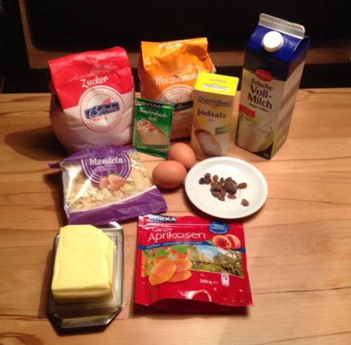
Zuerst stellte Winky einen Topf auf den Herd und erwärmte die Milch darin. Die Butter kam auch dazu. Während diese schmolz, gab sie das Mehl in eine Schüssel und rührte die Hefe dazu. Derweile war auch die Butter fertig. Noch einmal umrühren und dann kam die Butter-Milch-Mischung zum Mehl. Auch den Zucker, das Salz und ein Ei gab sie dazu. Winky rührte nun so lange, bis ein glatter Teig entstanden war. Jetzt musste der Teig noch gehen.
Sie deckte ihn zu und stellte ihn zur Seite. Nach etwa einer Stunde hatte der Teig das Doppelte seines Volumens erreicht und Winky nahm ihn aus der Schüssel. Sie knetete ihn noch einmal kurz durch und formte dann mehrere Teigstücke:
Ein großes ovales Stück wurde der Kopf, zwei kleine längliche Stücke bildeten die Ohren, vier lange, stabförmige Stücke formten die Beine. Natürlich gehörten dazu auch vier Füße, die aus vier kugelförmigen Stücken entstanden. Jetzt fehlten noch viele kleine runde Stückchen für den Körper und ein kleines längliches Stück für das Schwänzchen.
Winky ließ das fertig gelegte Lamm noch etwas gehen und heizte inzwischen den Ofen auf 180° Umluft vor. Nun kam das zweite Ei zum Einsatz. Sie trennte das Eigelb vom Eiweiß und bestrich großzügig ihr Lamm damit. Jetzt noch zwei Rosinen als Augen eindrücken und dann schob Winky das Lamm auch schon in den Ofen. Nach 20-25 Minuten war es fertig und bereit, den Schülern serviert zu werden. Das Osterfest war gerettet!
Wer das Rezept nachkochen möchte, findet es auch auf Chefkoch sowie den Hefeteig bei Dr. Oetker.
Friede, Freude, Eierkuchen?!
Ostern stand vor der Tür und wie jedes Jahr war es die Aufgabe von Lovely für ihre Herrn und Gebieter die Ostereier zu besorgen, zu bemalen und zu verstecken. Die beiden Kinder Finn und Lara freuten sich wie jedes Jahr bereits sehr auf die Ostereiersuche in ihrem Garten und auch die Eltern waren schon neugierig, welche Verstecke Lovely dieses Jahr wählen würde.
Lovely hatte wirklich Glück mit ihrer Familie. Die Familie Peterson, bei der sie seit Jahren als Hauselfe beschäftigt war und denen sie gehörte, war eine von den nettesten Zauberfamilien in England, wie Lovely fand. Ärger gab es fast nie und so hatte Lovely viel Zeit, die Eier zu besorgen und farbenfroh zu gestalten. Nach tagelanger, mühevoller Kleinarbeit – immerhin sollten die Kinder auch liebevolle Eier finden – machte sich Lovely eines schönen Morgens, während die Kinder im Muggelkindergarten und die Eltern auf der Arbeit waren, daran die Eier gut, aber nicht zu schwer zu verstecken.
Sie hatte gerade angefangen, als plötzlich Hugo, der Nachbarshund um die Ecke geschossen kam. Er hatte schon immer eine besondere Zuneigung für die Hauselfe gehabt und raste in einem Affentempo auf sie zu. Lovely versuchte noch schnell, die vielen bemalten Eier, die sie sorgsam auf ihren Armen balancierte, abzustellen, aber es war zu spät. RUMS! Und schon lagen alle Eier zerbrochen auf dem Boden. Hugo schien das nicht zu stören, er leckte einmal Lovely übers Gesicht und fing dann an die Eier vom Bode zu schlecken.
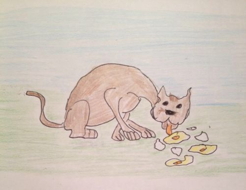
Lovely hingegen stand kurz vor einem Herzinfarkt und war nahe dran in Tränen auszubrechen. All die mühsame Arbeit war umsonst gewesen. Traurig schlich sie zurück ins Haus und überlegte den ganzen Vormittag, wie sie das Osterfest doch noch retten konnte. Lara und Finn hatten sich schließlich so auf die bunten Eier gefreut und sie waren auch Lovelys ganzer Stolz gewesen.
Spätnachmittags kam Mrs. Peterson ins Haus, freudestrahlend wollte sie von ihrem tag berichten, als ihr Blick auf Lovely fiel. Stockend berichtete die Elfe von dem Missgeschick am Vormittag. Mrs. Peterson konnte Lovely aber schnell trösten. Und so wurde es doch noch ein schönes Osterfest, denn Lovely konnte der Familie noch einen leckeren Eierkuchen machen. So freuten sich alle über den leckeren Eierkuchen und lachten gemeinsam über den lustigen Hugo.
Osterbastelei mit Dobby
Es waren noch zwei Tage bis Ostern. In der Küche von Hogwarts war gerade etwas Ruhe eingekehrt. Die Schüler waren mit Abendessen versorgt und vereinzelt räumten einige eifrige Hauselfen die Reste weg, die nach dem Kochen übrig geblieben waren. Andere wiederum gönnten sich eine kleine Pause, bevor das Geschirr aus der Großen Halle zurückkam.
Dobby saß an einem großen hölzernen Tisch. Um ihn herum lagen buntes Papier, eine Schere, Stifte und Papierkleber. Er zeichnete gerade mit Bleistift etwas auf braunen Karton, als Wendy, eine kleine Hauselfe, neugierig neben Dobby stehen blieb. Sie sah sich unsicher um, denn nicht alle Hauselfen fanden es gut, dass Dobby oft auch anderen Tätigkeiten nachging, als zu putzen oder zu kochen. Wendy allerdings war fasziniert von Dobby, auch wenn sie das vor den anderen nicht zugab. „Was machst du denn da?“, fragte sie interessiert. „Ich bastele. Hier, siehst du? Das sind Eierbecher.“ Dobby hielt eine fertige Bastelei hoch. Tatsächlich: es war ein Eierbecher in Form eines kleinen Hasen. Wendy lächelte, denn ihr gefiel der Hase aus Papier sehr gut. „Und warum machst du das?“, fragte sie dann etwas verwundert. „Ich möchte sie hier aufstellen. Ich finde, wir sollten unsere Küche auch etwas schmücken, damit sie nicht so langweilig aussieht“, antwortete Dobby. Wendy betrachtete die Bastelei noch einen kurzen Moment, dann fragte sie: „Kannst du mir zeigen, wie das geht? Gerade ist ja nicht so viel zu tun.“ Dobby lächelte erfreut. Schließlich kam es sehr selten vor, dass die anderen Hauselfen es gut fanden, wenn er einmal etwas machte, was ihm gefiel. „Natürlich.“ Er rutschte mit seinem Stuhl etwas zur Seite, damit Wendy sich neben ihn setzen konnte.
Damit wir die Eierbecher basteln können, brauchen wir Folgendes:
- Tonpapier in braun und weiß
- eine Schere
- Papierkleber
- einen schwarzen Filzstift
- einen Bleistift
- eventuell Wackelaugen
- Kunststroh, Bast, Wolle oder ähnliches für die Barthaare
- ein Ei.
Dobby hatte vorher schon eine Schablone aus Pappe für die Grundform des Hasen vorbereitet. Diese Grundform übertrug er nun mit Bleistift auf braunes Tonpapier. Danach nahm er sich die Schere, schnitt die Form vorsichtig aus und legte sie zur Seite. Auf weißes Papier malte er die Pfoten, die Nase und zwei kleine Kreise für die Augen, in die er zwei Schwarze Punkte malte. Während er auch diese ausschnitt, sagte er zu Wendy: „Man kann auch Wackelaugen als Augen benutzen. Aber ich schneide alles gern selbst aus.“ Aus schwarzem Karton schnitt er nun noch zwei ohrenförmige Teile aus, die allerdings etwas kleiner waren, als die Ohren der Grundform. Die fertigen Einzelteile klebte er an den richtigen Stellen auf die Hasenform. Mit einem schwarzen Stift malte er noch kleine Pünktchen auf die Hasenschnauze. Anschließend schnitt er sechs kurze Stücke von weißem Bast ab, welche er dann als Barthaare auf die Schnauze klebte. „Du kannst dafür auch weiße Wolle oder Kunststroh nehmen, je nachdem, was dir besser gefällt“, erklärte Dobby. "So, jetzt müssen wir die Form nur noch zum Stehen bringen. Weißt du, wie das geht? Nein? Dann pass auf. Wir müssen links und rechts an der Grundform zwei Stellen markieren, die wir einschneiden können. Dann können wir beide Enden zusammenstecken. Man sollte aber immer noch einmal nachmessen, ob die Schlitze an der richtigen Stelle eingezeichnet sind. Sonst kann es sein, dass das Ei nicht hineinpasst. Um das zu überprüfen, musst du die Form einmal um das Ei legen und die Stelle vorn in der Mitte markieren, an der beide Enden sich überlappen. Ganz wichtig ist, dass du ein Ende von oben und eins von unten bis etwa zur Mitte einschneidest. Willst du es auch mal versuchen?“ „Au ja, gern“, sagte Wendy fröhlich. Als sie fertig war, zeigte sie Dobby stolz ihren Eierbecher. „Das hast du gut gemacht“, lobte Dobby. Wendy legte ein Ei in die dafür vorgesehene Öffnung und stellte den Hasen vor sich auf den Tisch. Mit Dobby bastelte sie noch mehrere dieser Behälter, mit denen sie dann die Küche dekorierten.
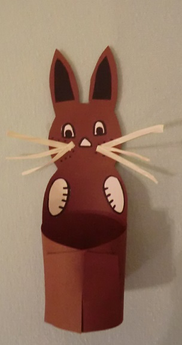

Wer den Eierbecher nachbasteln möchte findet hier die Anleitung und auf dieser Seite die Bastelvorlage. Viel Spaß beim Nachbasteln!
Ravenclaw
Wie das Ei an den Himmel kam
Ob ihr es glaubt oder nicht, auch Zentauren werden geboren und laufen nicht immer mit Bart und voll ausgewachsen durch ihre heimischen Gefilde, hier in unserem Beispiel den Verbotenen Wald. Es war lange bevor Albus Dumbledore überhaupt geboren wurde, geschweige denn Schulleiter von Hogwarts wurde. Lange vorher. Es geschah einhundert Jahre nachdem Hogwarts gegründet wurde und der christliche Glaube nicht allzu tief in den Verbotenen Wald eingedrungen war, selbst der Wildhüter, den es damals schon gab, huldigte den alten Sitten.
Und so glaubten die Zentauren damals noch stärker, wenn es überhaupt möglich ist, an die Macht der Sterne. Man schrieb das Jahr 1054, als die jungen Zentauren tagsüber einen Ausflug an eine Lichtung machten, betreut von einer jungen Zentaurendame. Aber anstatt wie geplant die Pflanzen und Tiere zu betrachten und kennenzulernen, starrten die jungen Zentauren in den Himmel und ließen sich nur schwer dazu bringen, das kennenzulernen, was sie heute kennenlernen sollten. Als die junge Fridwalda gerade den Unterschied zweier Farnsorten erklärte und die kleinen Zentauren sogar aufmerksam lauschten, wandte sie selbst den Blick zum Himmel und fand etwas, was dort sicherlich nichts zu suchen hatte. Eine kleine zweite Sonne erstrahlte dort und das am ersten Ostertag, wie sie sehr wohl wusste. Wie Zentauren und auch Zentaurendamen nun einmal sind, brachte sie diese beiden Tatsachen in einen Zusammenhang. Natürlich wurden die Kleinen, naja so klein waren sie auch nicht, aber die Jungen trugen noch keinen Bart, sofort aufmerksam darauf, dass ihre Begleiterin für diesen Tag selbst nicht dorthin schaute, wo sie hinschauen sollte, nämlich zu dem Farngestrüpp am Boden, sondern in den Taghimmel. Und so schauen sie alle zu dem kleinen hellen Punkte und versuchten ihn einzuordnen in das regelmäßige Drehen der Sterne. Sie kamen zu keinem Schluss und schienen sehr beunruhigt zu sein, einige sagten sogar, dass sie Angst hätten und auch Fridwalda war beunruhigt, dieser helle Punkt hatte dort nichts zu suchen, denn er konnte auch kein Meteor sein, denn er bewegte sich nicht, nur die regelmäßige langsame Drehung der Erde mitgehend. Und wie es so kam, war diese Erscheinung auch von den anderen Zentauren beobachtet worden und die stille Lichtung wurde immer überfüllter. Aber selbst die anderen Zentauren, sogar die alten und weisen schüttelten etwas nervös den Kopf. Das kannten sie nicht und was der Mensch oder auch der Zentaur nicht kennt beunruhigt ihn zuerst.
So standen sie da bis es dunkel wurde, aber nun strahlte der neue Stern so hell, wie kein anderer am Sternenhimmel. Die Erwachsenen schauten sich das Schauspiel am Himmel genau an, aber die kleinen wurden sehr ängstlich und scharten sich eng um Fridwalda. Selbst unruhig, begann sie eine Geschichte zu erzählen: „In einer fernen Welt drehen sich die Planeten nicht um die Sonne, sondern ruhen unbeweglich auf vier Elefanten.“ Hier stockte sie ein wenig, aber fuhr sofort fort: „ Diese vier Elefanten stehen auf einer großen Schildkröte namens … namens …A’tuin, sogar Groß A’tuin weil sie so groß ist.“ Aufmerksam lauschten die Kleinen und wie Fridwalda bemerkte, sogar die ältesten und weisen Zentauren. „Diese Schildkröte ist dafür verantwortlich, dass neue Welten entstehen und so legt sie alle Tausend Jahre Eier, die leuchtend durch den Himmel ziehen um diese Welten hervorzubringen.“ Fridwalda spann die Geschichte noch ein wenig aus, aber der Begriff „Das Große Ei“ wurde bekannt unter den Zentauren und drang auch zu den Zauberern und Muggeln durch. Und weil es gerade Ostern war und es am Himmel so bunt leuchtete wurde die Idee des Ostereis geboren. Und nicht nur die, sogar die Idee der großen Schildkröte wurde geboren, obwohl es auch ein Hase hätte sein können.
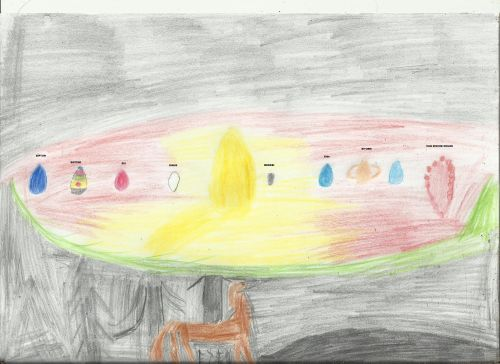
Sternen-Mobile
Da die Zentauren sich in allen Belangen ihres Lebens von den Sternen leiten lassen, kommt es nicht überraschend, dass auch Ostern bei Ihnen mehr von Sternen, als von Eiern geprägt ist. Deshalb folgt hier eine Anleitung zur Gestaltung eines Sternen-Mobile.
Bastelmaterial:
- Window-Color in verschiedenen Gelb-Tönen
- schwarze Konturenfarbe
- ein kleiner Bogen Window-Color-Folie
- Schere
- Nylonband
- dicke Nähnadel
- Dosenpiekser
- ein oder zwei Äste
Bastelanleitung:
- Die Window- Color- Folie nehmen und von der Bastelvorlage die Sterne und den Mond mit der Konturenfarbe abmalen. Wie häufig ihr welches Motiv abmalt ist dabei euch überlassen.
- Die Farbe trocknen lassen.
- Wenn die Konturenfarbe trocken ist alle Sterne und den Mond ausmalen.
- Die Farbe trocknen lassen.
- Sterne und Mond ausschneiden. Tipp: Von den kleineren Sterne ein paa zusammen lassen, dann sieht es nach einer kleinen Gruppe aus.
- Bei allen Motiven in einer Spitze ein kleines Loch mit dem Dosenpiekser machen.
- An jedes Motiv ein Nylonband knoten. Tipp: Nutzt dabei unterschiedlich lange Stücke Nylonband.
- Den Ast mit einem Nylonband ins Fenster hängen. Tipp: Wenn ihr zwei kleine Äste benutzt, bindet sie mit einem Nylonband zusammen.
- Jetzt nach Lust und Laune Motive an den Ast hängen. Tipp: Wenn ihr euch hin und wieder ein paar Schritte vom Mobile entfernt, könnt ihr euch einen besseren Eindruck machen.
Schon ist das Sternen-Mobile fertig. Viel Spass beim Basteln!
Osterhasen im Verbotenen Wald
Es war kurz vor Ostern, als die Osterhasen den Verbotenen Wald bezogen. Ihr fragt euch sicherlich was Osterhasen im Verbotenen Wald machen, nun ja das will ich euch erzählen. Also auf Geheiß des Zaubereiministers sollten die Osterhasen den magischen Bewohnern des Waldes eine Freude machen. So auch den Zentauren, um die es heute in der Geschichte geht.
Firenze, einer der jüngeren Zentauren galoppierte durch den Wald als er auf die Hasen traf. Neugierig und mit verschränkten Armen beobachtete er die kleinen Tiere. Was macht ihr hier, frage Firenze die Kleinen. Flocke, der Anführer der Osterhasen schaute ihn zunächst etwas ängstlich an ehe er antwortete. Also wir sind hier auf Geheiß des Zaubereiministers und bringen ein bisschen Farbe in den tristen Wald. Was wollt ihr denn machen, fragte Firenze skeptisch, immerhin war dies unter anderem sein Gebiet und Eindringlinge waren nicht gern gesehen. Flocke legte seinen Pinsel nieder. Wir wollen mit unserer Magie versuchen Ostern in den Wald zu bringen, indem wir Ostereier bemalen und kleine Geschenke verteilen. Daraufhin erwiderte Firenze, ihr wisst schon das der Wald voller gefährlicher Kreaturen wie Zentauren oder Spinnen ist und die ganz gewiss keine bunten Ostereier oder irgendwelche komischen Geschenke haben wollen. Das, werter Herr Zentaur ist uns durchaus bewusst, erwiderte Pünktchen, einer der anderen Osterhasen fröhlich.
Die Gruppe der Osterhasen begann sich aufzuteilen, nach einem indirekten Hinweis von Flocke. Die eine Gruppe, bestehend aus 5 Osterhasen, stellten kleine Osterkörbchen her, die mit Magischem Moos bedeckt wurden. Die zweite Gruppe bemalte die Ostereier in verschiedenen Farben. Die letzte Gruppe packte die Ostereier und die kleinen Geschenke die hergestellt wurden in die kleinen Körbchen. Firenze beobachtete das ganze Spektakel neugierig ehe er aufschreckte und weg galoppierte. Firenze, riefen die anderen Zentauren im Chor als sie den jungen Zentauren erblickten. Die Gruppe der Zentauren bildete einen Kreis um Firenze und bevor er auch nur ein Ton sagen konnte trat Bane hervor. Firenze mein junger Freund wo bist du gewesen, wir haben dich schon gesucht. Firenze scharrte mit den Hufen, ehe er zu reden begann.
Also wir haben hier im Wald Besuch von Osterhasen. Was machen Osterhasen im Verbotenen Wald fragte Bane, und alle anderen Zentauren murmelten wild durcheinander. Man konnte die Worte was ist ein Osterhase und was macht ein Osterhase heraushören. Das lässt sich nicht so einfach erklären, begann Firenze, ich denke ihr solltet euch das einfach anschauen. Nun gut wir werden uns dieses Phänomen Osterhasen mal anschauen sagte Bane mit ruhiger Stimme. Und so folgten die Zentauren um Bane Firenze.
Als sie bei der Stelle der Osterhasen ankamen sahen sie die Farbenpracht welche die Osterhasen erstellt hatten. Firenze trat zu Flocke und stellte ihm die Gruppe der Zentauren vor. Flocke stellte sich auf die Hinterpfoten und begann zu erzählen. Also die Muggel feiern Ostern um andern eine Freude zu machen sie bekommen kleine Geschenke, sitzen beisammen, suchen Ostereier und essen auch sehr viel. Der Zaubereiminister fand diesen Brauch sehr schön und nun feiern wir Ostern auch in der Zauberwelt. Und wir Osterhasen sind eigentlich ganz normale Hasen nur das wir Magische Fähigkeiten haben. Bane und die andern Zentauren schauten sich das neugierig an und freuten sich über die Osterhasen, die Ostereier und die kleinen Geschenke die sie von den Osterhasen geschenkt bekomme hatten. Und beschlossen ab jetzt jedes Jahr Ostern zu feiern.
Osterlamm
Als Thales am Morgen des Ostertages aufwachte war die Sonne gerade aufgegangen und man konnte noch ganz schwach den Mond am Himmel sehen. Schnell schickte er einen Gruß an die bleiche Sichel, die in der Nacht über ihn gewacht und einen ruhigen Schlaf beschert hatte. Das Gras war nass vom Tau, als er über die Wiese zu den anderen Zentauren seiner Herde lief. Der Ostermorgen war für ihn heute etwas ganz Besonderes: Heute würde er von Muhlifain, der Herden-Ältesten, beigebracht bekommen, wie man das Osterlamm backt, während die älteren Herdenmitglieder gemeinsam auf die Jagd für das abendliche Festmahl gingen. Die Osterlämmer werden von den Fohlen am Morgen gebacken und dann abends zusammen mit allen anderen am Feuer gegessen.
Muhlifain hatte schon alle benötigten Zutaten bereitgelegt, als Thales sich zu den andern Fohlen setzte. Zusammen begannen sie nun die Zutaten nach Anweisung der Ältesten zusammen zugeben und zu mischen. Als der Teig schließlich in den Formen im Feuer lag, fragte Thales: "Wie kommt es eigentlich, dass wir am Ostertag auch immer Backen? Ich dachte, nur die Jagd gehört zur Tradition der Zentauren?" "Nun, das kommt von einer Begebenheit, die schon einige hundert Jahre her ist," begann Muhlifain ihre Geschichte...
... Damals gab es nur die traditionelle Osterjagd und sie wurde damals auch nicht in einem freundschaftlichen Wettstreit von allen Erwachsenen ausgeführt, sondern von drei ausgewählten mutigen Kriegern. In diesem Jahr traf die Auswahl die Geschwister Alnitak, Alnilam und Mintaka. Alnitak und Alnilam waren erfahrenen Jäger und sehr geschickt im Umgang mit Pfeil und Bogen. Und während Mintaka sicherlich nicht weniger mutig war als ihre Brüder, mangelte es ihr doch an Treffsicherheit. Nachdem die drei den Segen der Sterne erbeten hatten für Glück und Schutz auf der Jagd, machten sie sich auf den Weg in den Wald. Schon bald fanden Sie Spuren von verschiedenen Wildtieren und trennten sich, damit jeder jeweils einer dieser Spuren folgen konnte. Alle drei hatten schon bald die jeweilige Fährte aufgenommen und machten sich bereit.
Alnitak hatte schon bald das Wild, dessen Spur er gefolgt war, gefunden und legte einen Pfeil an, der auch sogleich sein Ziel fand. Auch Alnilam erspähte sein erwähltes Ziel und auch sein Pfeil flog traf zielsicher ins Schwarze. Mintaka hatte ebenfalls Erfolg im Aufspüren ihrer potentiellen Beute und spannte ihren Bogen und zielte. Doch der Pfeil verfehlte sein Ziel und verschwand im Dickicht des Waldes. Und auch der nächste Pfeil flog knapp vorbei und hatte nur zur Folge, dass das Wild aufgeschreckt wurde und die Flucht ergriff, um im Dunkel zwischen den Bäumen zu verschwinden. Mintaka verfolgte ihre Beute, jedoch war es inzwischen schon recht dunkel geworden und das Wild war gut versteckt. Schließlich kam sie an das Ende des Waldes ohne die Spur wiedergefunden zu haben. Enttäuscht machte sie sich auf den Rückweg zu ihrer Herde, wohl wissend, dass ein Versagen bei der Jagd kein gutes Omen für das Osterfest sein würde.
Auf dem Weg zurück erblickte Mintaka im Dickicht einiger Sträucher zufällig ein Vogelnest mit einigen nicht ausgebrüteten Eiern. Um wenigstens etwas mit zu bringe für ihre Herde, nahm sie die Eier an sich. Und als sie an einem Weizenfeld vorbei kam nahm sie auch hier einige Ähren mit. Und als sie sah, wie eine Maus emsig an ihren ergatterten Nüssen knabberte, kam ihr eine Idee. Sie mahlte die Ähren und fügte noch einige weitere Dinge aus ihrem eigenen Proviantbeutel hinzu und vermischte alles. Dann zündete sie ein Feuer an und buk den entstandenen Teig. Das Ergebnis war zwar nicht die traditionelle Beute, die von einer Jagd normalerweise erhofft wurde, aber in gewisser Weise hatte sie der Natur ebenfalls alle Bestandteile "abgejagt".
"... So kommt es, dass am Ostertag nicht nur die Jagd ihre Tradition hat, sondern auch das Backen," schloss Muhlifain ihre Geschichte. "Und eure Osterlämmer sollten inzwischen auch fertig sein."
Zutaten:
- 2 kleine Eier
- 1 Pr. Salz
- 2 geh. EL Zucker
- 1 Pkt. Vanille-Zucker
- 2 geh. EL Mehl
- 2 geh. EL Mandeln (oder gem. Haselnüsse)
Zubereitung:
Eiweiß mit Salz schnittfest schlagen. Eidotter mit Zucker und Vanille-Zucker zugeben, nochmal kurz schlagen. Mehl und Mandeln (Haselnüsse) darunterheben. In eine gut gefettete und bemehlte Form geben und bei 180° 30-35 Minuten backen.
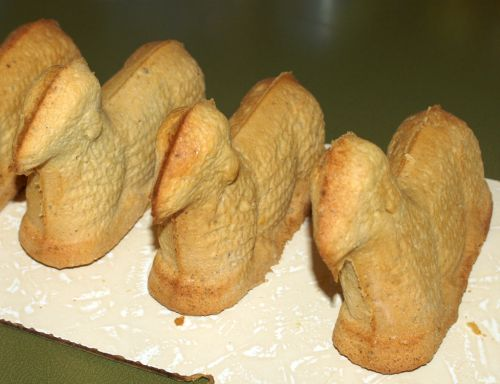 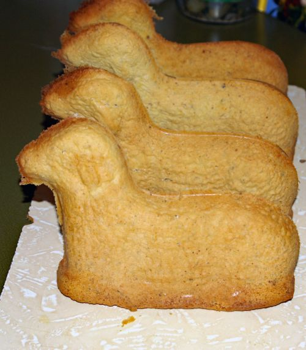Wer mag, kann das Osterlamm mit Puderzucker bestäuben oder mit Puderzuckerguss bestreichen und in Kokosflocken wenden. Für die Augen können z. B. Rosinen verwendet werden
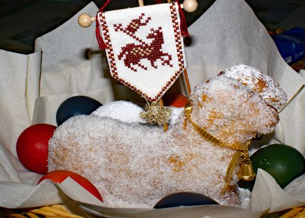Der Mars ist hell heute Nacht – ein Sonett zum Osterfest
Die Kleinen fragten Ronan nach bunten Eiern und dem Osterfest
Er sprach zu ihnen kurz: „ Der Mars ist hell heute Nacht!“
Und fuhr fort: „Der Himmel hat Euch wie immer aber mehr mitgebracht.
Folgt mir auf die Lichtung und der bestirnte Himmel zeigt Euch den Rest!“
„Er zeigt Euch wie wir verstehen bei Zauberern und uns dieses Fest.
Schaut nun hinauf und seht genau wie sie erstrahlen in aller Farben Pracht!
Seht genau, das Blau des Neptun, das Gelb des Saturn und der Mars hat das Rot mitgebracht!
Die Zauberer wissen auch die Eier sind bunt, doch der Himmel zeigt uns allen das Best‘.
Die Eier bilden nur ab, die Fruchtbarkeit und Vielfältigkeit des Sternenhimmels.
Der Mensch holte dies auf die Erde und schuf dazu den Osterhasen.
Und erklärt so den Kindern die Schönheit und Kraft der Natur!
Wie gelb erklärt wird auch durch den Löwenzahn oder weiß durch die Farbe des Schimmels,
Farben gezeigt in der Natur in Wald und Feld und zur Not durch die Blumen in Vasen.
Alles ist nur ein Abbild und dient als Erklärung von Gottes Kraft doch nur!“
Slytherin
Zauberei
Ein frisches und rohes Ei auspusten
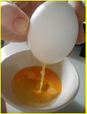Ei von innen und außen gut waschen
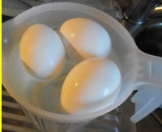Götterspeise/Wackelpudding nach Geschmack und Anleitung zubereiten
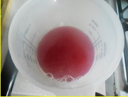Ein Eierloch eines Eies zukleben. Achtung, das ist ein bisschen kniffelig!
Das Ei in die Götterspeise geben und voll laufen lassen.
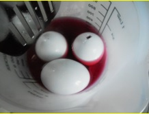Im Kühlschrank mindestens 5 Stunden kalt stellen.
Aus dem Papier eine Tüte formen und dem Ei als Zauberhut aufsetzen.
Am Ostersonntag das Ei einem Familienmitglied servieren. Guten Appetit!
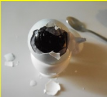Karl-Freitagsgedicht
Der Frühling beginnt,
die Wipfel rauschen.
Das Flusswasser rinnt,
wir Riesen lauschen.
Der Kuckuck schreit,
die Zeit ist reif.
Bäume fliegen weit,
bis zum Silberstreif.
Das Morgenlicht erhellt,
die langen Reihen,
Bäume sind aufgestellt,
immer zu dreien.
Riesen treten vor,
zum Wettstreit bereit,
bis vors Tor.
Alle sind soweit.
Das Kräftemessen beginnt,
Baumstämme werden gegriffen.
Der Stärkste gewinnt,
habt ihr’s begriffen!
Wein fließt reichlich,
Speisen und Braten,
alle laben sich,
keiner muss warten.
So geht’s fort,
Stunde um Stunde.
An diesem Ort,
herrscht frohe Runde.
Karl-Freitag
Warum heißt Karl-Freitag eigentlich Karl-Freitag? Diese Frage wird uns Riesen ständig gestellt, dabei ist es doch sonnenklar, warum unser höchster Feiertag, so heißt. Aber auch Zauberer sind wohl manchmal etwas schwer von Begriff.
Deshalb will ich die Frage nun ein für allemal beantworten.
Die Geschichte beginnt am so genannten Gründonnerstag der Muggel im Jahre 1027 in der heutigen Schweiz. Eine Riesenversammlung sollte am darauf folgenden Wochenende stattfinden, bei der das Oberhaupt aller Riesenclans gewählt werden sollte. Da die Riesen bekanntlich viel Platz brauchen, lebten sie auch damals schon sehr verstreut. Die Abgesandten der einzelnen Clans machten sich daher teilweise schon einige Tage früher auf die Reise, so dass viele von ihnen bereits am Donnerstag am Ziel ankamen.
Wie bei Riesentreffen üblich, ging die Trinkerei, Prahlerei und leider auch das Kräftemessen gleich los. Es zeigte sich, dass Almdudler auf Riesen eine verheerende Wirkung hat, ähnlich wie Alkohol auf Muggel. Bald waren die Abgeordneten der Clans in so heftige Kämpfe verwickelt, dass es die ersten Toten zu beklagen gab.
Genau zu dieser Zeit kamen die Abgesandten des Himalaja-Clans im Matterhorntal an. Nicht ganz so groß, wie ihre europäischen Riesenbrüder, wurden sie oft belächelt und spaßhaft groß gewachsene Muggel genannt. Ihr Anführer Ka-un-lara, von den meisten nur Karl genannt, erfasste die Lage sogleich und befahl seinen Begleitern die restlichen Almdudlerfässer zügig und möglichst unbemerkt gegen Wasserfässer auszutauschen. Dann zogen sie sich in ein Seitental zurück und warteten auf den nächsten Tag.
Wie erwartet waren zur Mittagszeit die ersten Streithähne aus ihrem Schlaf erwacht. Was für ein Entsetzen kam über sie, als sie ihre toten Mitbrüder erblickten. Zu Erklärung sei gesagt, dass es natürlich ständig zu Todesfällen bei Revierkämpfen kommen konnte, aber bei einem offiziellen Clantreffen darf niemand getötet werden, dies ist das oberste Riesengesetz!
Vor Wut und Verzweiflung begannen die restlichen Gefährten der Getöteten, Bäume auszureißen, Steine zu schmeißen und sich auf alle anderen zu stürzen.
Da schritt Ka-un-lara mutig in die Mitte des Kampfplatzes und rief laut die fünf geheimen Worte, die den Beginn eines Clantreffens kennzeichnen.
Sofort hielten alle Riesen in ihren Aktivitäten inne und setzten sich zähneknirschend in den traditionellen Kreis. Jeder Clan hat seinen angestammten Platz darin.
Wie es die Überlieferungen vorschrieben, hatte nun Ka-un-lara den Vorsitz dieses Anführertreffens, da er die Eröffnungsworte gesprochen hatte. Noch nie hatte, bis zu diesem Zeitpunkt, ein asiatischer Riese den Vorsitz in einer internationalen Riesenversammlung gehabt. Normalerweise waren die europäischen Clans die Führer, weil sie größer und stärker als alle anderen Riesengruppen waren. Aber nun hatte das Schicksal entschieden und Ka-un-lara zum Harun, dem Lenker und Leiter bestimmt.
Schlauerweise war er sich seiner körperlichen Unterlegenheit durchaus bewusst. Auch wenn er zu dieser Zeit durch den Zwangsfrieden geschützt war, gleich nach dem Ende des Treffens wäre er leichte Beute für alle unzufriedenen Clanführer gewesen.
Jeder wollte natürlich das Oberhaupt aller Riesen werden und die damit einhergehenden Privilegien für drei Jahre genießen. Deshalb war es jedes Mal eine große Herausforderung, den obersten Anführer zu wählen. Viele Jahre endeten diese Wahlen mit zahlreichen Toten, bis der Zwangsfrieden eingeführt wurde, um den Riesenbestand zu erhalten. Da in der Regel die stärksten Bewerber gewählt werden sollten, wurde ein offizieller Wettkampf entwickelt. Jeder Bewerber musste sich im Zweikampf mit einem Herausforderer messen, ohne ihn zu töten. Durch dieses bewährte KO-System wurde so das zukünftige Oberhaupt gefunden.
Bei diesem denkwürdigen Treffen nun, hatte die Vorauswahl bereits unbeabsichtigt begonnen, so dass schnell ein würdiger Kandidat feststand.
Es blieb aber noch reichlich Restzeit von der Riesenversammlung übrig, da die offizielle Amtseinsetzung frühestens am Sonntag, also am dritten Tag erfolgen darf. Ka-un-lara hatte also ein Problem. Womit beschäftigt man kraftstrotzende frustrierte Riesen, ohne ein neues Blutbad zu riskieren? Als er so am Grübeln war, sah er, wie eine merkwürdige Muggelprozession sich den Berg hinaufwand. Viele von ihnen trugen Holzkreuze auf dem Rücken und machten leidende Gesichter.
Ka-un-lara hatte sogleich die rettende Idee. Es schnappte sich einen Muggel und warf ihn mit großer Leichtigkeit den Berg hinauf. Die anderen Riesen blickten irritiert und kamen neugierig heran. Der Harun erklärte ihnen, dass die Muggel wohl auf dem Weg zum Gipfelkreuz seien. Es wäre doch bestimmt ein toller Spaß, ihnen den Weg abzunehmen und sie in einem Wettbewerb der Geschicklichkeit auf das Matterhorn zu schleudern.
Sofort waren die Riesen Feuer und Flamme. Sie schnappten sich die Muggel und begannen einen lustigen Wettbewerb. (Die Muggel waren von ihrem Freiflug seltsamerweise nicht so begeistert.)
Der Wettbewerb gefiel den Riesen so gut, dass sie nach dem Ende der Versammlung gleich zu Hause von diesem lustigen Wettstreit erzählten.
Jahrhundertelang feierten seit diesem Clantreffen die einzelnen Verbände, teilweise mit Nachbarstämmen gemeinsam, den Ka-un-lara-Freitag. Da dieses Wort viel zu lang und exotisch klang, bürgerte sich sehr schnell der Karl-Freitag als offizieller und beliebtester Feiertag der Riesen ein.
Natürlich waren nicht überall Muggel in ausreichender Anzahl vorhanden, und scheinbar verirrten sich gerade in der Zeit um den Karl-Freitag immer weniger Muggel in die Gebiete der Riesen, so dass in diesen Fällen auf Baumstämme für den Weitwurf zurückgegriffen wurde. Seitdem das Geheimhaltungsabkommen auch bei den Riesen durchgesetzt wurde, dürfen überall nur noch Baumstämme für den Weitwurfwettbewerb verwendet werden. Die zu werfen ist zwar weitaus weniger lustig, dafür bieten sie eine neue Herausforderung, weil sie wesentlich schwerer sind und die Riesen ihre Stärke so noch besser unter Beweis stellen können.
Karfreitagsbrötchen
Um die leckeren Karfreitagsbrötchen backen zu können, brauchst du folgende Zutaten:
- 500g Mehl
- 1 Teelöffel Salz
- 1 Messerspitze Piment
- 1 Messerspitzte Nelke
- 1 Prise Muskat
- 1 Prise Pfeffer
- 60g Margarine in Flocken
- 150g Zucker
- 180g Korinthen
- 30g fein gehacktes Zitronat
- 35g Hefe
- 200g warme Milch
- 2 Eier
Siebe zuerst das Mehl, das Salz und die Gewürze in eine Schüssel und mische die Margarineflocken mit den Fingerspitzen unter. Anschließend gibst du den Zucker, die Korinthen und das Zitronat dazu.
Mische die Hefe mit der warmen Milch und gib dann die Eier dazu. Danach vermischst du alle Zutaten nach und nach zu einem weichen Teig, den du am besten mit dem Handmixer kräftig durchknetest. Wenn du keinen Handmixer hast, kannst du dazu auch einen großen Holzlöffel nehmen oder einfach die Hände nehmen.
Lasse den Teig nun an einem warmen Ort für ungefähr 60-90 Minuten gehen.
Knete den Teig auf einer mit Mehl bestäubten Arbeitsfläche nochmals leicht durch und teile ihn dann in zwölf gleichgroße Stücke. Diese Stücke formst du nun zu runden Brötchen.
Bestäube das Backblech mit Mehl, lege die Brötchen darauf und lasse sie noch einmal 10-15 Minuten gehen.
Heize den Ofen auf 200-220°C vor.
Bestreiche die Brötchen mit verquirltem Ei und ritze sie mit einem Küchenmesser kreuzweise ein.
Backe die Brötchen etwa 15-20 Minuten lang.
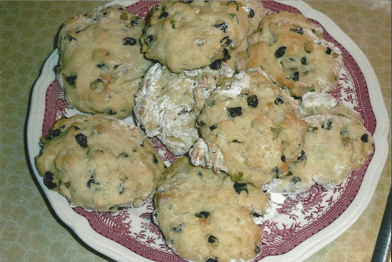Guten Appetit!
Als die Steine farbig wurden
Jala saß wieder einmal zwischen den Bäumen am Waldrand und schmollte. Was konnte sie schon dafür, dass sie so viel kleiner war als die anderen Kinder in ihrem Alter? Immerhin war sie inzwischen schon über 2 Meter groß. Nur war sie damit immer noch mindestens einen halben Meter kleiner als ihre Altersgenossen. Und die machten sich deshalb ständig über sie lustig. Also versuchte Jala, sich so gut es eben ging von ihnen fernzuhalten.
Wenn sie sich hier am Waldrand versteckte, fanden die anderen sie selten. Sie konnten sich dort einfach nicht so gut vor den Muggeln verstecken. Manchmal war es eben doch von Vorteil, ein wenig kleiner zu sein. Manchmal hatte Jala sogar Glück und konnte ein paar Muggel beobachten. Dabei fühlte sie sich dann endlich auch einmal groß. Vor allem, wenn sie die Muggelkinder betrachtete. Die waren wirklich winzig.
Auch an diesem Tag hatte Jala Glück. Dort am Rand der Wiese, die sich an den Wald anschloss, saßen ein paar Muggelkinder auf einer Bank hinter einem Haus. Vorsichtig schaute Jara durch die Blätter eines Baumes um herauszufinden, was genau die Kinder dort machten. Warum mussten die auch so klein sein und mit noch kleineren Sachen spielen? Es sah so aus, als hätten sie kleine Stöcke in der Hand und berührten damit abwechselnd andere kleine Gegenstände. Was war das nur für ein seltsames Spiel?
Jala lehnte sich weiter vor, um vielleicht noch ein wenig besser sehen zu können. Noch ein klein wenig weiter, nur noch … KNACK! Der Baum gab nach und Jara rollte mitten auf die Wiese.
Oh je, wie hatte ihr das nur passieren können? So hatte sie natürlich die Aufmerksamkeit der Muggelkinder erregt, die sie auch schon neugierig beobachteten und dann vorsichtig näherkamen. Jala war verzweifelt. Immer wieder hatten ihre Eltern ihr gesagt, dass sie nicht zu nahe an die Muggel herangehen sollte und dass diese sie unter keinen Umständen sehen durften, weil sie sonst ganz schreckliche Dinge mit Jala machen würden. Dem Riesenmädchen traten vor Angst Tränen in die Augen. Was würden die Beiden wohl mit ihr machen.
Die beiden kleinen Muggel blieben ein paar Meter von Jala entfernt stehen und starrten sie mit großen Augen an. Noch nie hatten sie jemanden gesehen, der so groß war und gleichzeitig aussah wie ein Kind! Lange Zeit herrschte völlige Stille. Jala hatte Angst vor den Muggeln und die Muggelkinder fürchteten sich vor Jala, weil sie so groß und fremd war.
"Hast du dir weh getan?", fragte nach einiger Zeit das Muggelmädchen zögerlich, "du blutest an der Hand." Vorsichtig setzte sich Jala auf und begutachtete ihre Hand. Sie musste sich beim Aufprall die Haut aufgeschürft haben. Zum Glück tat es kaum weh, deshalb schüttelte die junge Riesin den Kopf.
"Warum bist'n du so groß?", platzte der Junge heraus.
"Bin ich gar nicht", murmelte Jala, "Die anderen sind alle viel größer als ich."
"Noch größer?", staunten die Kinder und sahen sich unsicher um.
Jala nickte traurig: "Sie ärgern mich deshalb immer. Die anderen Kinder in meinem Alter sind mindestens einen halben Meter größer als ich." Der Junge schluckte und schaute unsicher zu dem Mädchen hinüber. Doch die schien davon völlig unbeeindruckt zu sein.
"Ich weiß was du bist", sagte sie triumphierend: "Du bist ein Riese. Ich habe Bilder von euch in meinem Märchenbuch! Was machst du denn hier?"
Jala war ein wenig überrascht. Sie hatte schlimme Geschichten über Muggel gehört, doch diese beiden schienen ganz nett zu sein. Der Junge sah sogar ein wenig so aus, als hätte er mehr Angst vor ihr als sie vor ihm.
"Ich habe mich vor den anderen versteckt, weil sie mich wieder geärgert haben. Und dann habe ich euch entdeckt und wollte unbedingt herausfinden, was ihr dort mit den winzigen Stöcken macht. Und dann ist der Baum kaputtgegangen", versuchte sie zu erklären.
"Stöcke?", fragte das Mädchen verwirrt. "Ah, du meinst die Pinsel. Wir haben Ostereier angemalt. Komm ich zeige es dir." Forsch zupfte das Mädchen an Jalas Ärmel um sie zum Mitgehen aufzufordern.
"Ich heiße übrigens Eva und dass ist mein Bruder Philipp." Der Junge schaute seine Schwester mit großen Augen an. Hatte sie den Verstand verloren? Riesen - das waren doch in den ganzen Geschichten immer die Bösen. "Und wie heißt du?", hörte er seine Schwester fragen.
"Jala", antwortete die junge Riesin. Scheinbar hatte das Mädchen keine Angst vor ihr und so nett war noch nie jemand zu ihr gewesen. Waren diese Kinder anders oder stimmten die Geschichten einfach nicht, die die älteren Riesen ihr erzählt hatten? "Was sind Ostereier?", fragte Jala nun neugierig.
"Eier, die wir zu Ostern bunt anmalen und dann werden sie versteckt und wir Kinder dürfen sie suchen", erklärte Eva, "Das macht richtig viel Spaß. Hier versuche es doch mal."
Das Mädchen reichte Jala ein Ei und einen Pinsel. Doch oh weh. Jalas Hände waren zu groß und zu ungeschickt und das Ei zerbrach. Erschrocken blickte sie die Kinder an. Sie hatte ihr Spielzeug kaputt gemacht, jetzt waren sie sicher böse auf sie. Doch die Kinder reagierten anders als erwartet.
„Uuups!“, lachte Eva und selbst ihr Bruder konnte sich ein Grinsen nicht verkneifen, als er Jalas erschrockenes Gesicht sah. Er bückte sich und hob einen großen Stein auf: „Vielleicht versuchst du es lieber damit, das geht nicht so schnell kaputt. Ich habe gesehen, dass Tante Inge mit den Farben auch auf Steine gemalt hat. Das funktioniert genauso gut.“
Jala nahm den Stein und versuchte ihn bunt anzumalen, wie die Kinder es ihr zeigten. Das war gar nicht so einfach, aber nach ein paar Versuchen ging es schon ganz gut. Trotzdem war sie hinterher fast so bunt wie ihre Steine. Wie die Geschwister es ihr erklärt hatten, nahm sie die Steine mit nach Hause und versteckte sie, damit die anderen Riesen sie suchen konnten. Diese neue Idee stieß zunächst auf Verwunderung, doch gerade die jungen Riesen hatte so viel Spaß dabei, Steine zu suchen und auch eigene Steine zu bemalen, dass sich mit der Zeit eine richtige Tradition daraus entwickelte und bei der die Riesen nun in jedem Frühjahr bunte Steine versteckten uns suchten. Jala wurde dadurch bei ihren Altersgenossen sehr beliebt und viel weniger wegen ihrer Größe gehänselt.
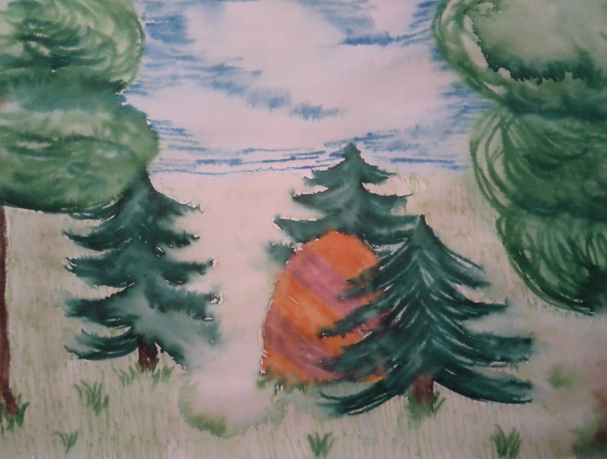Auch eine weitere Tradition entwickelte sich, denn die Freundschaft, die Jala mit den beiden Muggelkindern geschlossen hatte, hielt ein Leben lang und selbst, als alle erwachsen waren und Eva und Philipp in andere Städte umgezogen waren, trafen sie sich jedes Jahr an Ostern um gemeinsam Eier und Steine zu bemalen.
Gryffindor
Buntes Chaos
Ladina summte fröhlich vor sich hin und tanzte zwischen zwei Pinselstrichen durch das Zimmer. Bald war Ostern und dieses Jahr sollte es ganz besonders schön werden. Dazu hatte sie sich mit ihren Freundinnen überlegt, die Ostereier selbst von Hand zu bemalen. Diese wollten sie dann an Kinder verteilen. Während Ladina lieber alleine arbeitete, hatten es sich ihre Freundinnen draußen gemütlich gemacht. Immer mal wieder war Gekicher zu hören und auch Ladina musste dann jeweils schmunzeln. Sie hielt kurz inne und ließ ihren Blick über den Tisch schweifen. Rote, gelbe, blaue und grüne Eier lagen schön abgepackt in einem großen Korb. Daneben trockneten noch die Farben der bunten Eier. Ob getupft, geringelt, mit Muster, schrägen und geraden Linien – alles war auf ihrem Tisch zu finden. Nachdenklich fragte sie sich, ob die Kinder nicht doch einen Farbschock bekommen würden, wenn alles so übermäßig bunt aussah. Dann schüttelte sie jedoch ihre langen weißgoldenen Locken und schob den Gedanken zur Seite.
Plötzlich erklang von draußen Geschrei und Vogelgekreische. Ladina stutzte erst und stürzte dann zur Tür. Was sich ihr vor der Tür für ein Schauspiel bot, konnte sie erst gar nicht begreifen. Es herrschte ein Tumult und Feuerbälle flogen hin und her. Ihre Freundinnen hatten ihre schöne Veela-Gestalt abgelegt und standen auf beiden Seiten des Gartens mit schuppigen Flügeln und Vogelköpfen und schleuderten sich Feuerbälle entgegen. Mitten zwischen ihnen fanden sich aufgeschlagene Eier, umgefallene Farbtöpfe und wild verstreute Pinsel. In der Ferne sah Ladina noch davonrennende Leute, die sich in Sicherheit brachten.
„Was ist denn hier los?“, fragte sie entsetzt. „Ihr sollt die Eier anmalen, nicht verbrennen!“
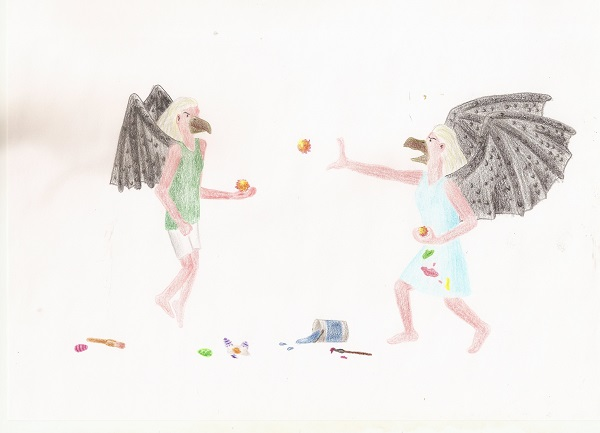Entschieden trat sie zwischen ihre Freundinnen und konnte sie mit viel Überredungskunst zur Vernunft bringen. Wieder zurückverwandelt schauten ihre Freundinnen sie betreten an.
„Wir haben die Kontrolle verloren. Eins kam zum andern und dann ging unser Temperament mit uns durch. Du weißt ja, wie aufbrausend wir sind.“
Ladina seufzte. Vielleicht war es keine gute Idee gewesen, ihre Freundinnen alleine zu lassen. Immerhin war sie der ruhige Pol der Gruppe. Doch es half alles nichts, Ostern rückte näher und sie mussten ihre Vorbereitungen bald abschließen.
„Kommt, wir sammeln alles ein und schauen, was wir noch brauchen können. Zusammen kriegen wir das sicher wieder hin.“
Optimistisch machte sich Ladina an die Arbeit und ihre Freundinnen halfen ihr. Bald konnten alle drei wieder fröhlich lachen. Die übrig gebliebenen Eier malten sie dann zu dritt an und so wurden sie gemeinsam doch noch rechtzeitig fertig.
Veela Colada Dessert
Ein weißes Dessert mit einem sauren Kern - Die Veela lässt grüßen!
Zutaten (für 4 Portionen)
- 250 g Mascarpone
- 250 g Magerquark
- 1 kleine Bio-Zitrone
- 1 kleine Dose mit Ananasstückchen
- 5 EL Kokosmilch
- 2 EL weißen Zucker
- 3 EL braunen Zucker
Zubereitung:
Verrühre den Magerquark mit der Mascarpone mithilfe eines Schneebesens. Gieße die Ananas ab, aber vergiss nicht, den Saft in einer kleinen Schüssel aufzufangen. Von dem Saft gibst Du nach und nach insgesamt 5 EL in die Creme und vermischst alles jedes Mal sehr gründlich.
Wasche die kleine Bio-Zitrone gründlich ab und reibe etwa 2 EL Zitronen-Schale in die Creme. Gib noch 1 EL Zitronensaft, die Kokosmilch und den weißen Zucker in die Creme. Mische alles, sodass keine Klumpen mehr zu sehen sind.
Nimm Dir eine kleine Schale zur Hand und befülle sie mit den bereitgestellten Ananasstückchen. über die Ananas verteilst Du nun gleichmäßig und vorsichtig die Creme, ohne alles zu mischen.
Zur Dekoration wird der braune Zucker als eine Art Deckel auf der Creme verteilt. Stelle das Dessert noch ca. 1 Stunde lang in den Kühlschrank.
Variation:
Du kannst das Dessert auch mit anderen Früchten aus der Dose zubereiten. überlege Dir jedoch, ob Dir die Kokosmilch dazu schmecken würde. Wenn nicht, dann kannst Du auch Kakao, Vanillemilch, Haselnussmilch etc. anstatt der Kokosmilch nehmen.
Viel Spaß beim Nachmachen und guten Appetit!
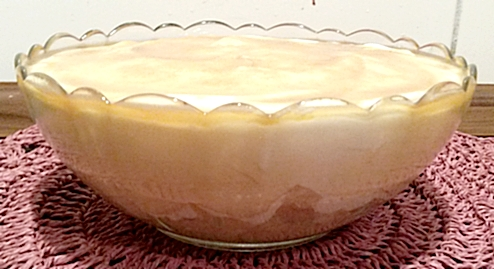Gedicht
Bald antik, schon fast vergessen,
das Quidditchtreiben, Kräftemessen,
von Irland und Bulgarien,
besungen in 'zig Arien.
Vierundneunzig rückten beide
sich auf dem Felde sehr zu Leibe.
Mit Maskottchen im Gepäck -
die einen schön, die andern keck.
"Was fürwahr elende Verschwender! -
Nix Quidditch hier! O-ster-ka-len-der?!"
Ja, Empörling, du hast Recht,
dafür habt ihr nicht geblecht...
Lasst mich also folglich nun,
die letzten nöt'gen Schritte tun,
um zum Punkte meines Schreibens
zu kommen - und zwar möglichst eilends.
Die schönen Wesen, die ich nannt',
sind als "Veelas" wohl bekannt.
Da sich die Löwen hier befassen,
mit dieser unter allen Rassen,
und Bulgarien sie hat erwählt,
um im Sport zu sein gestählt:
Präsentiert bekommt ihr keine Seuche,
sondern bulgarische Osterbräuche.
Traditionell geht es dort zu,
doch durch Fortschritt, ohne Ruh'
wurde modern die ganze Feier,
dort gibt es nun auch Ostereier.
Doch von Anfang an muss ich erzählen,
soll im Bericht nachher nichts fehlen:
Die erste änderung, die dort passiert?
Das Fest wird anderswo datiert!
Der Kalender, den wir verwenden,
vom ollen Gregor - wer kann sich's denken? -
für Cäsar hätt' es voll gefetzt,
wird vom julianischen ersetzt.
Dem entsprechend starten die Tage,
die da sind für die Fastenplage,
schon sieben Wochen im Voraus,
nicht vierzig Tage, so sieht's aus!
Die letzte Woche dieser Zeit,
raubt jegliche Gemütlichkeit:
die orthodoxe Kirche dort,
sieht Arbeit vor, in einem fort.
Zu putzen ist das ganze Haus,
den Müll schmeißt man gleich hochkant raus,
entzündet ihn, bis alles strahlt,
dann wird die Mauer neu bemalt.
Diese Bräuche sollen neben Seelen,
auch die Häuser nicht verfehlen
und rein'gen auf den letzten Grund,
den ganzen Hof, mit Has' und Hund.
Donnerstag dann geht's ans Eierfärben,
und Ostern handelt auch vom Sterben,
weshalb das erste, ganz in Rot,
weist hin auf Jesu Blut und Tod.
Natürlich ist Sorgfalt beim vielen Fegen,
vom Huhn beim Legen der Eier anzulegen!
Dass der Mensch sie richtig koche,
ist Teil der ganzen "Leidenswoche".
Bezeichnend, dass man sie so nennt,
doch dass man sie nicht anders kennt
liegt wohl in der Religion begründet,
und nicht darin, dass man sich so schindet.
Am Karfreitag - ähnlich schlimm,
schreibt man dann "Kreuzfreitag" hin.
Die Aufgabe an diesem Tag,
ist hingegen rosig-zart.
Man soll nichts tun und hält mit Müh
durch bis dann zur Samstagsfrüh'.
Da allerdings, mit Schlafmangelmacken,
muss man auch noch 'nen Kuchen backen!
Das ist wirklich gut durchdacht -
Osterkuchen - in der Nacht!
Als ob das nicht genug schon wär',
ist diese Aufgabe besonders schwer.
Verständlich, dass viele Frauen laufen,
und beim Bäcker lieber kaufen.
Schließlich steht samstags im Programm,
der erste Besuch der Kirche an.
Will man da nicht die Augen schließen,
die Predigt des Priesters ganz genießen,
ist ein querlagiger Besuch des Bettes,
durchaus etwas sehr sehr Nettes.
Nach dem Gottesdienst der Lohn:
rund um die Kirche Prozession -
dreimal außen um das Haus,
die Kerzen gehn dabei nicht aus.
Anschließend aber ist's vorbei
mit der Friedlichtuerei:
Die Leute machen Eierkampf,
und lassen dabei mächtig Dampf.
Im Eifer des Gefechts noch ganz,
gewinnt das Ei den Siegerkranz.
Gesundheit, Glück und Frieden,
sind dessen Besitzer gleich beschieden.
Wem's zerbricht, der hat den Schaden,
darf sich aber dann dran laben.
Besonders Kinder zeigen Eifer,
mit Hoffnung sind die Großen reifer.
Wer am Sonntag früh aufsteht,
die zweite Messe überlebt,
und sich mit Not zuhause setzt -
der ist dies' Jahr genug gehetzt.
Endlich darf er ein großes Mahl,
mit Lamm und Wein in überzahl,
mit Freunden, Familie zu sich nehmen,
und nicht für diese Pause schämen.
Für ein Symbol für neues Leben,
die Bulgaren nach Geschäften streben.
Neue Kleidung für die Feiertage,
stehen dort ganz außer Frage.
Unter anderm schmücken Weidenkränze
- die wachsen ordentlich zum Lenze -
das Haus, den Tisch, das Eigentum,
und erfüllen einen Zweck zum Ruhm:
Die Mädel werfen sie in hohem Bogen,
in des nächsten Flusses Wogen,
die nächste Braut dort zu bestimmen
,
je nach dem, wie schnell sie schwimmen.
Mehr könnt ihr euch selbst erlesen,
denn ich bekomme keine Spesen...
Auch langeweilen will ich nicht,
den Schluss setz' ich nun dem Gedicht!
Frühlingsdekorationen für kreative Veelas
Fleur Delacour sass an ihrem Schreibtisch. Sie hatte bald Geburtstag und wollte ihre Freunde einladen, um gemeinsam zu feiern. Die Einladungskarte sollte etwas ganz Spezielles werde. Etwas mit Blumen musste es sein, passend zu ihrem Namen. Sie grübelte lange, welches zauberhafte Blümchen denn die Karte zieren könnte. Plötzlich kam ihr eine Idee: Ihre Mutter hatte ihr mal eine wundervolle Blume gehäkelt, die sie sich an ihren Hut gesteckt und seither nie mehr weggelegt hatte, weil sie so schön war. So etwas muss es sein! Sie fragte ihre Mutter, wie man denn eine solche Blume macht. Daraufhin verschwand diese auf dem Dachboden und kam mit einem alten, staubigen Buch zurück. "Das Buch hat deine Oma geschrieben, da drin findest du sicher was du suchst!" Vorsichtig strich Fleur über den Deckel. Es kam ein goldener Schriftzug zum Vorschein:
Frühlingsdekorationen für kreative Veelas

Basisanleitung:
Häkle doppelt so viele Luftmaschen, wie du anschliessend Blütenblätter haben willst. Schliesse die Luftmaschenkette zu einem Ring. In der folgenden Runde häkelst du immer abwechslungsweise in eine Masche ein Blütenblatt und in die nächste eine Kettmasche.
Für kleine Blütenblätter empfiehlt sich folgendes Grundmuster: ein halbes Stäbchen, zwei Stäbchen und nochmals ein halbes Stäbchen in jede der Blütenmaschen häkeln, eine Kettmasche in jede Zwischenmasche.
Beim Blütenblatt hast du viele Variationsmöglichkeiten, du solltest nur darauf achten, dass die einzelnen Blätter jeweils symmetrisch sind. Für grössere Blüten können beispielsweise noch Doppelstäbchen oder Luftmaschen in der Mitte jedes Blattes eingefügt werden. Eine andere Variante ist, am Ende die gesamte Blüte mit festen Maschen zu umhäkeln.
Varianten für den Anfang:
Du kannst anstelle der Luftmaschen auch die gewünschte Anzahl feste Maschen in einen losen Fadenring häkeln. Wenn du das Loch in der Blütenmitte lieber etwas kleiner möchtest, kannst du mit halb so vielen Maschen beginnen und dann jeweils die Kettmaschen weglassen in der folgenden Runde.
Doppelblüten:
Besonders plastisch wirken Blüten mit zwei Blattkreisen. Dazu häkelst du eine Blüte nach obiger Anleitung. Anschliessend häkelst du vier Luftmaschen, dann eine Kettmasche zwischen die nächsten beiden Blütenblätter und so weiter. In der folgenden Runde häkelst du in jede dieser Luftmaschenbrücken ein Blütenblatt. Je nach verwendetem Blattmuster und Garn musst du anschliessend noch die inneren Blütenblätter nach vorne holen.
Das Gala-Event
Anjuta wühlte in ihren Kleidern herum und fand einfach nichts Passendes anzuziehen. Sie war auf einem Gala-Event eingeladen. Der Bulgarische Landtag lud zu einer Spendengala an Ostern ein. Als Maskottchen der bulgarischen Nationalmannschaft war sie natürlich auch eingeladen. Ihre silberfarbenen Haare wehten umher. Sie stand in einem verschlossenen Zimmer, doch das Haar von einer Veela war so zart, dass es auch in Gebäuden zu wehen schien. Sie griff nach einem Kleid. "Das muss es jetzt sein", sagte Anjuta und schob den restlichen Kleiderberg beiseite. Sie war spät dran.
Schnell ins Kleid geschlüpft, war sie auch schon fertig. Eine Veela hatte es leicht. Sie war so schön, dass es keinerlei Schminke oder Styling mehr benötigte. Sie schlüpfte in ihre Schuhe und ging aus ihrem Zimmer. "Viel Spaß, Anjuta!" Ihre Freundin winkte ihr zum Abschied. Anjuta verließ ihre Wohnung und machte sich zu Fuß auf den Weg zum Gala-Event, welches nur wenige Gehminuten von ihrer Wohnung entfernt lag. Schon von weitem sah sie den Eingangsbereich. An jeder Seite der Tür hatten die Veranstalter einen riesigen Osterhasen aufgestellt. Der eine hielt ein großes Tablett in den Pfoten, auf dem lauter gefüllte Gläser standen, die sich die ankommenden Gäste nehmen konnten. Der andere Hase hielt einen etwas kleineren Korb in der einen Hand, auf dem die Worte "Spende erwünscht“ standen. Anjuta ging an einer Gruppe wartender Männer vorbei.
Sofort zog sie ihre Aufmerksamkeit auf sich. Die Männer folgten ihr und versuchten sie zu umwerben. "Immer das Gleiche", dachte sie sich und versuchte die Gruppe abzuhängen. "Guten Tag, Miss Zvetkova", sagte ein elegant gekleideter Mann und reichte ihr ein Glas. Der Einlasskontrolleur ließ sie eintreten. Der Saal war bis zur Decke geschmückt. überall hingen pastellfarbene Bänder von der Decke. Große Kübel, gefüllt mit lauter Ostereiern, standen im gesamten Saal verteilt. An der einen Seite war ein langes Buffet aufgebaut. Auf der anderen Seite eine kleine Bühne. Als sie ein paar Schritte weiter in den Saal hinein ging, merkte sie, dass die Männer von draußen wieder an ihr klebten. Sie erkannte Hermes, ein Crew-Mitglied der Quidditch-Nationalmannschaft. "Hermes?", rief sie und ging schnell zu ihm. "Hallo Anjuta. Toll siehst du wieder aus." Mit einem kleinen Küsschen auf die Wange begrüßte er sie. "Du ziehst schon wieder alle Blicke auf dich", sagte er mit einem Schmunzeln. "Ja, ich weiß.“ Anjuta blickte sich um. Sie bemerkte, dass auch die männlichen Besucher am Rande auf sie blickten. "Miss Zvetkova, Alev Todorov, Kolumnist beim Zauberblatt. Ich bin großer Fan von Ihnen.“ Ein Mann mit auffälliger Krawatte stand auf einmal neben Anjuta und reichte ihr seine Hand. Anjuta schüttelte ihm die Hand und war ein wenig erschrocken. Sie hatte ihn gar nicht bemerkt. "Sie sehen bezaubernd aus. Darf ich mich Ihnen richtig vorstellen? Ich arbeite beim Zauberblatt und bin dort, als Kolumnist, einer der wichtigsten Personen im Unternehmen.“ Er lächelte sie an. Anjuta kannte diese Situationen zu gut. Immer neigten die Männer in ihrer Nähe zu übertreibungen. Nach mehreren Gesprächen fühlte sich Anjuta etwas müde. Es war immer schwierig konzentriert zu bleiben, wenn ihre Gesprächspartner ihr sämtliche Stories erzählten, nur um sie zu beeindrucken.
Doch dann kam ihr eine Idee. Sie dachte an den Deko-Osterhasen am Eingang und den Spendentopf. War sie egoistisch, wenn sie die Unterwürfigkeit der Männer für den guten Zweck ausnutzte? Sie überlegte, doch war sich ziemlich schnell sicher. Allen Männern, die sie ansprachen, sagte sie das Gleiche. Es war überhaupt nicht schwer. Sie musste nur einmal kurz ihr silberfarbenes Haar schütteln und schon standen neue Gesprächspartner bereit. Sie stand gerade vor drei männlichen Gästen und sagte: "Ich bin beeindruckt von Ihren Tätigkeiten. Ich bin so froh, dass so viele, gut verdienende Gäste hier sind. Die Gala lebt von Spenden. Und Sie spenden sicher einen guten Beitrag, bei Ihrem Gehalt?“ Danach lächelte sie ihre Gegenüber an, die sofort darauf ansprangen. Einige eilten sofort nach draußen, um einen Spendenbeitrag in den Korb des Osterhasen zu werfen, andere versicherten, dass sie dies später noch großzügig machen wollten. Ihr Plan ging auf. Am Abend verkündete der Veranstalter, dass er die größte Summe aller Zeiten an Spenden erreicht hatte. Er bedankte sich ausgiebig bei allen Gästen und war zutiefst berührt. Anjuta freute sich. Das Oster-Event war ein voller Erfolg. Noch lang in den Abend hinein wurde weitergefeiert und gespendet, sodass die Spendensumme sogar noch mehr anstieg.
Anjuta war sehr zufrieden mit sich, auch wenn sie die Befangenheit der männlichen Besucher sehr ausgenutzt hatte. Hermes stand zu später Stunde bei ihr. Er hatte natürlich gemerkt, was Anjuta veranstaltet hatte. "Ein bisschen durchtrieben bist du ja schon“, zog er sie auf. Doch sie konterte: "Ach Hermes! Heute ist es erlaubt. Es ist Ostern."
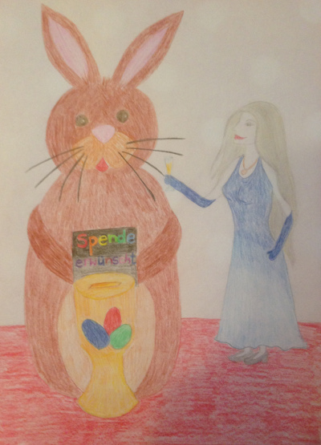Frohe Ostern!
Herzlichen Glückwunsch!
Ihr habt es geschafft und alle Überraschungen der diesjährigen Ostereiersuche gefunden.
Die Häuser des HP-FC wünschen allen ein frohes Osterfest!